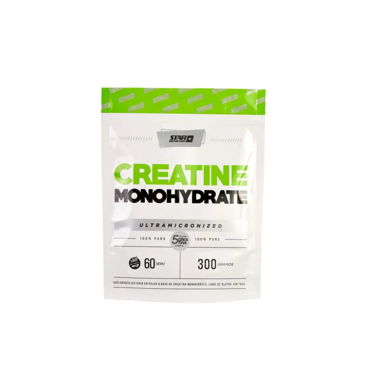
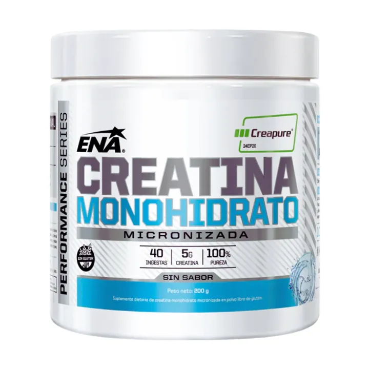

Lo que sí sabemos.



3 a 5 g por día
Todos los días, también los de descanso. Es el suplemento deportivo más estudiado y el más seguro en personas sanas.
Si estás pasando por un momento de ansiedad, hablá con un profesional de la salud. La creatina no reemplaza ningún tratamiento.